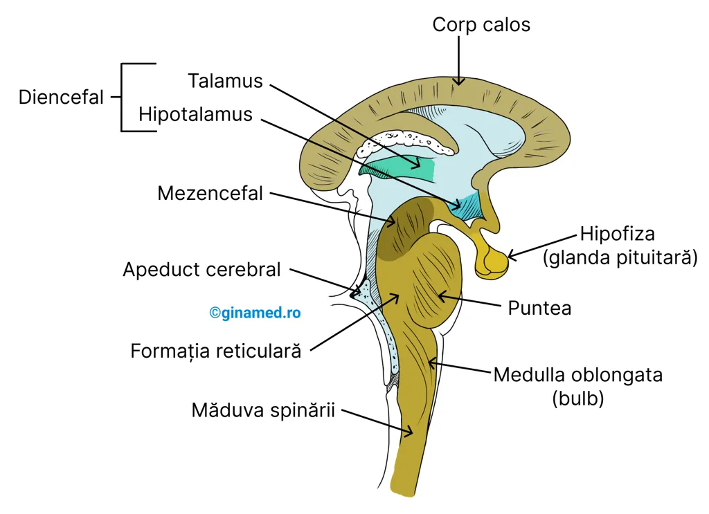

Biologie pentru admitere · UMF Cluj
Biologie, pe
înțelesul tău.
Materia, explicată și ilustrată. Grile, ca să verifici ce ai înțeles. Totul într-un singur loc.
Acces gratuit. Înveți în ritmul tău.Sistemul nervos
LecțieCap. 11

Deschide lecția ↗
Încearcă o grilă · mai multe răspunsuri corecte
Alege un capitol
Programa Barron’sDe la celulă la sistemele corpului.
🔬
Partea I
Bazele Anatomiei & Fiziologiei
Fundamentele — organizare, chimie, celulă, țesuturi.
2 din 2 lecții disponibile
🦴
Partea II
Tegument, Oase & Mușchi
Piele, schelet, articulații, fibra musculară.
2 din 2 lecții disponibile
🧠
Partea III
Sistem Nervos, Simțuri & Endocrin
Neuronul, SNC/SNP, percepție, hormoni.
3 din 4 lecții disponibile
❤️
Partea IV
Sânge, Cardiovascular & Imunitate
Sânge, inimă, vase, apărare imună.
0 din 3 lecții disponibile
🫁
Partea V
Respirator, Digestiv & Metabolism
Schimb gazos, digestie, bioenergetică.
0 din 3 lecții disponibile
🫘
Partea VI
Sistemul Excretor & Echilibru Intern
Rinichi, nefron, echilibru hidro-electrolitic.
1 din 1 lecție disponibilă
🧬
Partea VII
Sistemul Reproducător
Gametogeneză, hormoni sexuali, ciclu reproductiv.
2 din 2 lecții disponibile
Un loc pentru materia ta.
O platformă de studiu construită de un student pentru pregătirea admiterii la UMF Cluj. Lecțiile urmăresc materia din manualul Barron’s.
Conținutul marcat cu * reprezintă informații adăugate față de manual. În lecții poți căuta termeni și evidenția pasaje; evidențierile sunt temporare.